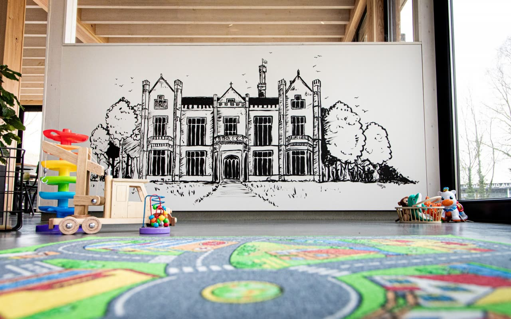

Schaffelaar Erf, Barneveld
Pannenkoeken uit de pan, in de oude veldschuur
Ambachtelijk gebakken met verse melk en eieren van de boer. Voor lunch, borrel, high tea of een vroeg diner, met de kinderen erbij.
Woensdag t/m zondag open vanaf 10.00 uur. Loop gewoon binnen.
Een veldschuur met een lichte serre
Sinds januari 2021 bakken we pannenkoeken in de oude veldschuur op het Schaffelaar Erf. In 2020 is de schuur volledig onder handen genomen: er kwam een lichte, uitgebouwde serre bij met ruimte voor zo’n 130 mensen. De sfeer van de schuur is gebleven, in de originele staanders, de houten gevelbekleding en de mooie schuifpuien.
Je kunt bij ons gewoon binnenlopen, voor een kop koffie met gebak, een lunch, een borrel of pannenkoeken aan het eind van de middag. Buiten zit je op ons overdekte en verwarmde terras. Vanuit het centrum van Barneveld ben je er zo, en het Schaffelaarse Bos ligt om de hoek.
Delia van den Brandhof
Gewoon in de pan gebakken
Een pannenkoek zoals het hoort: op de traditionele manier, met verse streekproducten.
Eieren
Kakelvers, van een scharrelboerderij in Voorthuizen.
Melk
Verse koemelk rechtstreeks van de boer. Voller van smaak, en maar vijf dagen houdbaar.
Meel
Naast ons gewone beslag kies je voor half volkoren, van molen Den Olden Florus in Terschuur.
Allergie? Geef het door bij het bestellen. We werken met speciale pannen, bijvoorbeeld bij een glutenallergie, en bakken ook met vegan, glutenarm, eivrij, lactosevrij en melkvrij beslag (meerprijs € 1,75 per pannenkoek).
High tea, net even anders
Even tussenuit met vriendinnen of familie, misschien na een wandeling door het Schaffelaarse Bos. Je krijgt een soepje, belegde sandwiches, kleine gebakjes en zoetigheden en scones. En onze pannenkoekensushi: stukjes pannenkoek belegd met zoetigheden, met chocoladesaus.
De high tea duurt twee uur. In die tijd schenken we de thee onbeperkt bij, in verschillende smaken.
€ 23,95 per persoon
Reserveer minimaal één dag van tevoren, telefonisch tijdens onze openingstijden.
Bel om te reserverenMet de kinderen erbij
Het restaurant en de omgeving zijn ingericht op kinderen. Binnen is een speelhoek en er is een kindermenu. Op het erf ligt de kinderboerderij, en het bos is vlakbij voor een wandeling.
“Niet alleen gezellig voor de volwassenen, ook de kinderen vermaken zich uitstekend in de kinderboerderij.”
Elyse Koster-Vlastuin

Rondom het pannenkoekenhuis
Het Schaffelaar Erf
Op het erf is van alles te beleven. Ga naar de kinderboerderij, of in het poortgebouw naar belevingscentrum Missie & Media.
Landgoed Schaffelaar
Op loopafstand ligt het landgoed met het kasteelachtige huis in neogotische stijl. Daarachter het Schaffelaarse Bos en de Koeweide: een grote weide met een gracht eromheen. Ideaal om even uit te waaien.
Centrum Barneveld
Door onze centrale ligging loop je zo naar het centrum van Barneveld.
Openingstijden
- Woensdag t/m zondag
- 10.00 – 20.30 uur
- Keuken
- 11.00 – 20.00 uur
- Maandag en dinsdag
- Gesloten
Aangepast in december
In december zijn we op woensdag en donderdag gesloten. Van 21 december 2026 tot en met 1 januari 2027 zijn we gesloten.
Reserveren
Met minder dan 6 personen kun je gewoon binnenlopen. Reserveren kan vanaf 6 personen, telefonisch. Voor een high tea is reserveren altijd nodig, minimaal een dag van tevoren.
Bel 0342-711004Parkeren
Er zijn drie parkeerplaatsen dichtbij. Staat de parkeerplaats van het Schaffelaar Erf vol, wijk dan uit naar een van de andere twee.
Stationsweg 2b, 3771 VH Barneveld
0342-711004
info@pannenkoekenhuisschaffelaar.nl
Een vraag?
Voor een vraag of verzoek dat niet direct beantwoord hoeft te worden, kun je dit formulier gebruiken. We komen zo snel mogelijk bij je terug. Reserveren kan niet via het formulier, bel daarvoor even.
Kom werken bij Schaffelaar
We zoeken keukenmedewerkers (16+). Je komt in een jong, gezellig en dynamisch team. Mail je sollicitatie naar info@pannenkoekenhuisschaffelaar.nl, dan komen we zo snel mogelijk bij je terug.